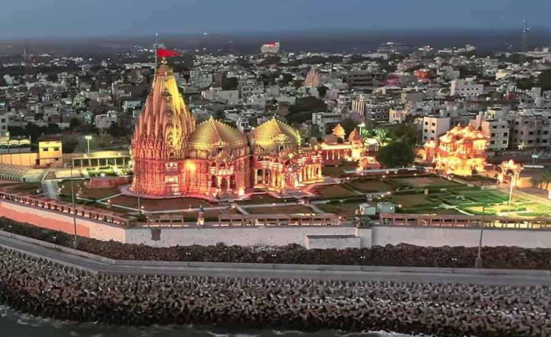
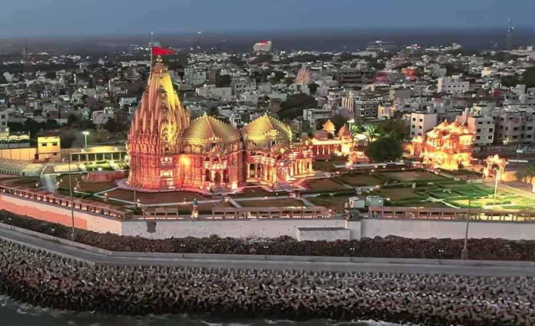
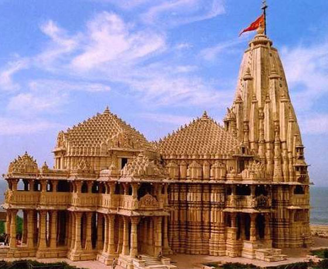
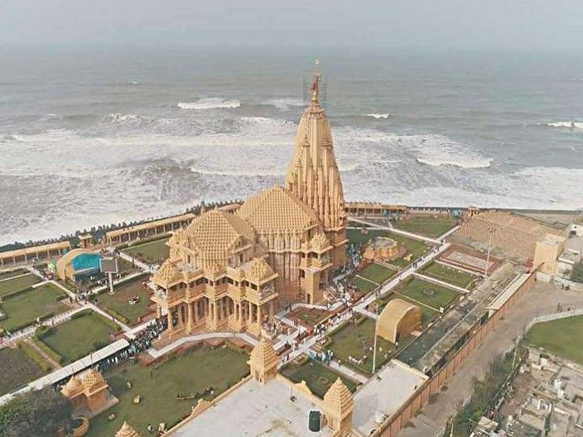
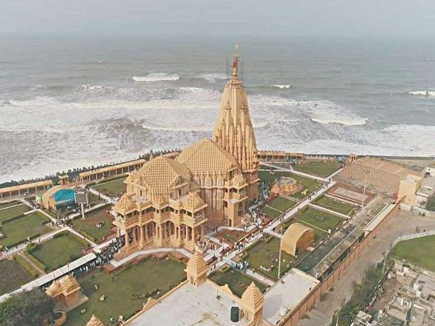
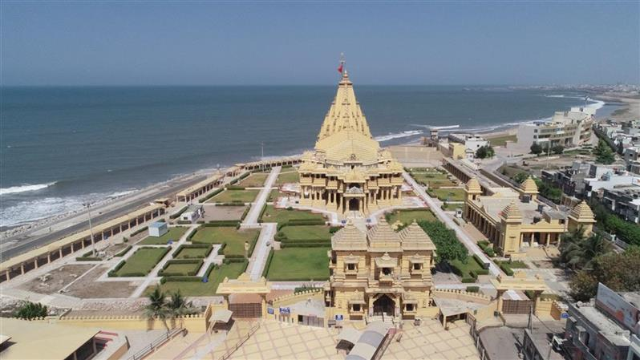
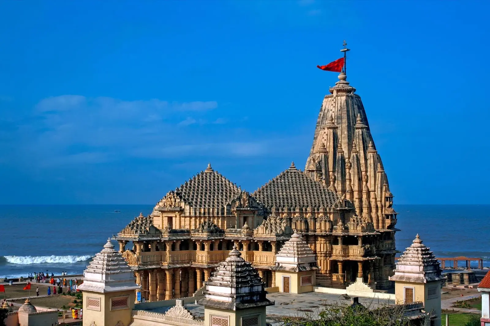
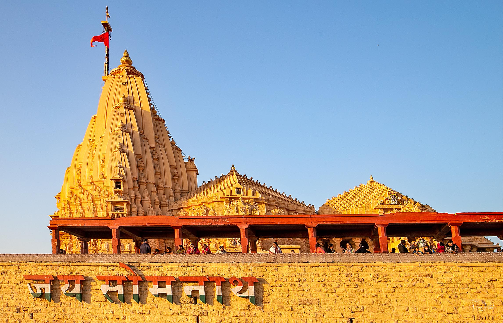
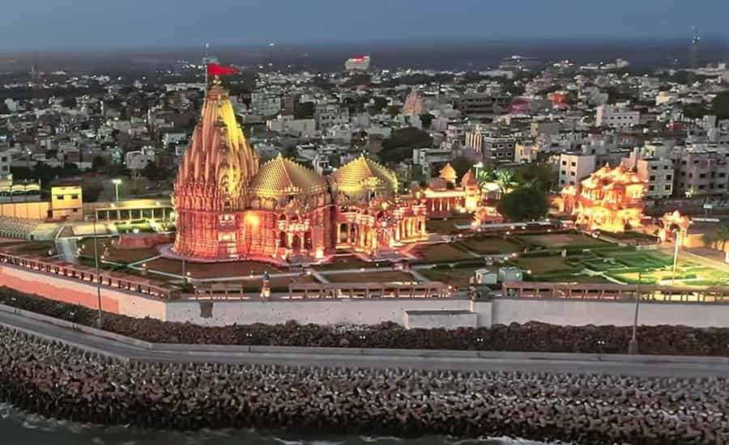
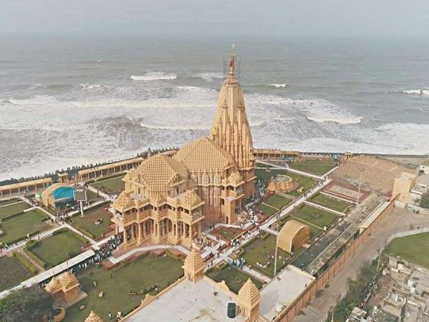

 



The Somanath temple (IAST: somanātha) or Deo Patan, is a Hindu temple located in Prabhas Patan, Veraval in Gujarat, India. It is one of the most sacred pilgrimage sites for Hindus and is the first among the twelve jyotirlinga shrines of Shiva. It is unclear when the first version of the Somnath temple was built, with estimates varying between the early centuries of the 1st millennium and about the 9th century CE.The temple is not mentioned in the ancient Sanskrit texts of Hinduism; while various texts, including the Mahabharata and Bhagavata Purana, mention a tirtha (pilgrimage site) at Prabhas Patan on the coastline of Saurashtra, where the temple is presently located, there is no evidence that a temple existed at the site in ancient times

